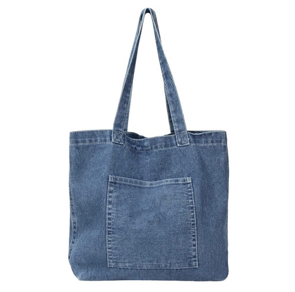
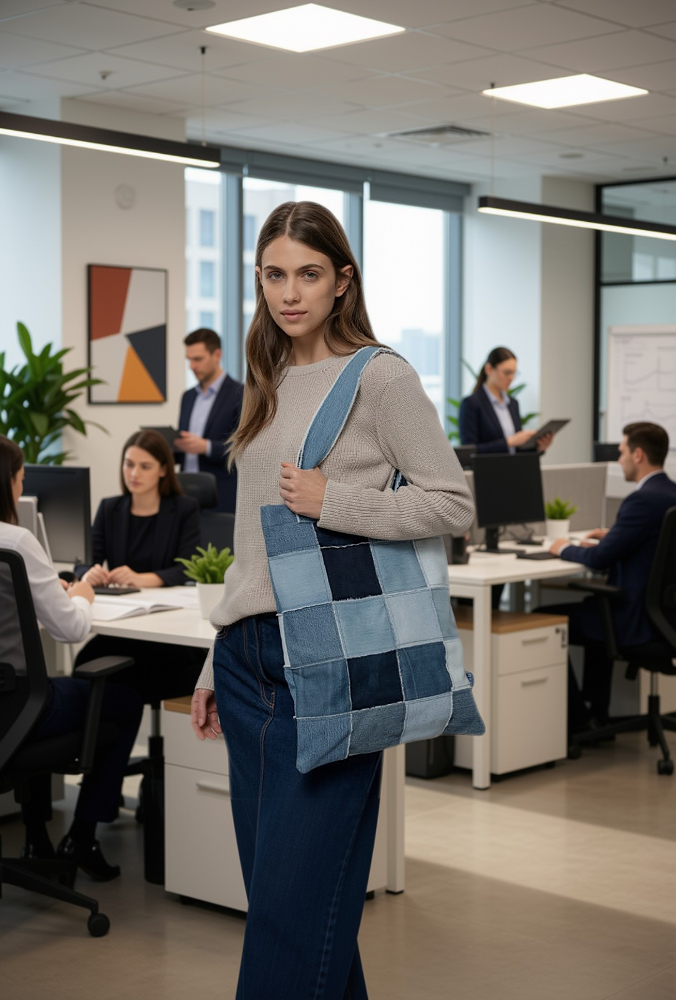
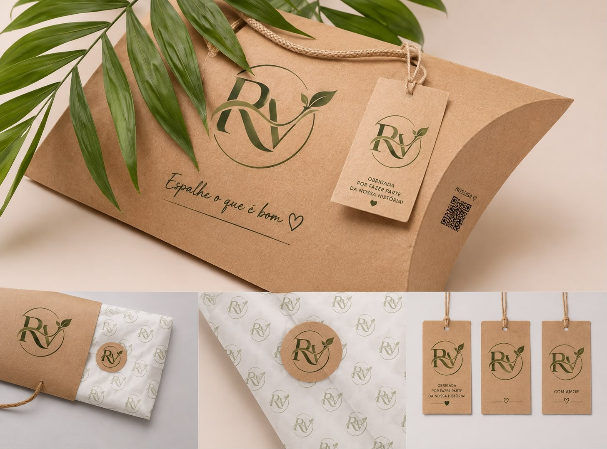
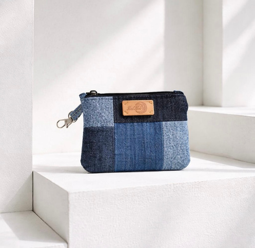
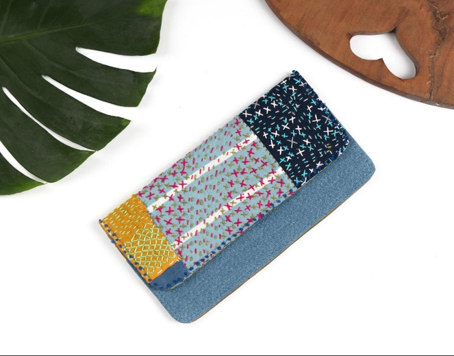
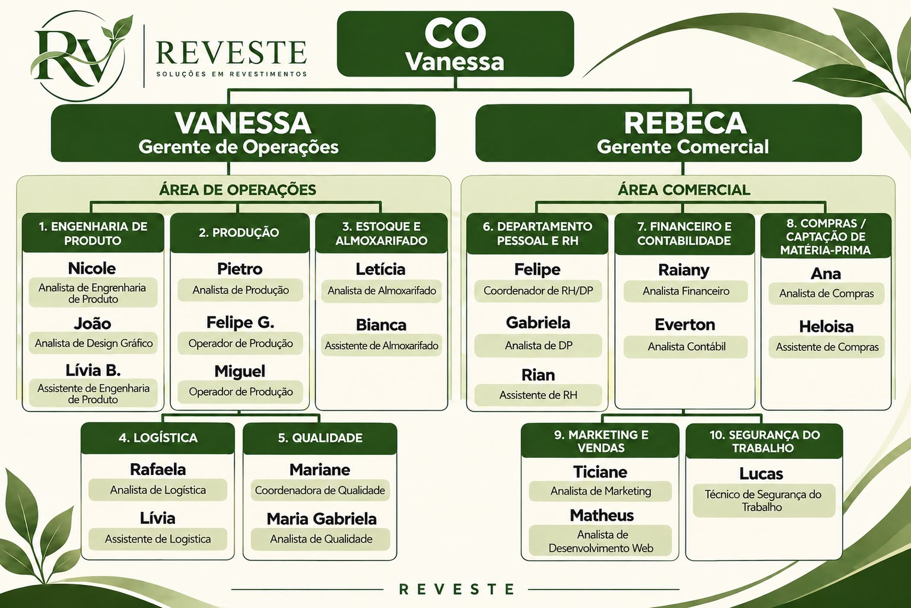

01
PARA O DIA A DIA
Transformamos jeans e outros tecidos que seriam descartados em acessórios funcionais, criativos e cheios de personalidade.

A REVESTE nasceu da percepção de que aquilo que muitas pessoas consideram sem utilidade ainda pode ter muito a oferecer.
Em meio ao descarte de roupas e tecidos, enxergamos uma oportunidade de transformar materiais esquecidos em novos produtos, unindo criatividade, funcionalidade e consciência ambiental.
Foi assim que surgiu a ideia de dar uma nova vida ao jeans e a outros tecidos que seriam descartados, transformando-os em acessórios como ecobags, porta-cartões e outras peças para o cotidiano.
Mais do que produzir acessórios, queremos ressignificar materiais, mostrando que sustentabilidade e estilo podem caminhar juntos.


01
02

03Imagens ilustrativas da proposta visual e dos tipos de produtos apresentados no projeto.

Acreditamos que a transformação começa quando mudamos a forma de enxergar os materiais. Na REVESTE, o tecido que seria descartado ganha uma nova possibilidade de uso — com criatividade, funcionalidade e consciência.
Conheça a empresa ↗Conheça a estrutura organizacional apresentada no projeto acadêmico da REVESTE.

Uma empresa fictícia desenvolvida para um projeto acadêmico, com foco na fabricação e comercialização de produtos sustentáveis a partir de materiais reaproveitados.
Uma nova vida para os tecidos. Uma nova história para cada peça.
Voltar ao início ↑